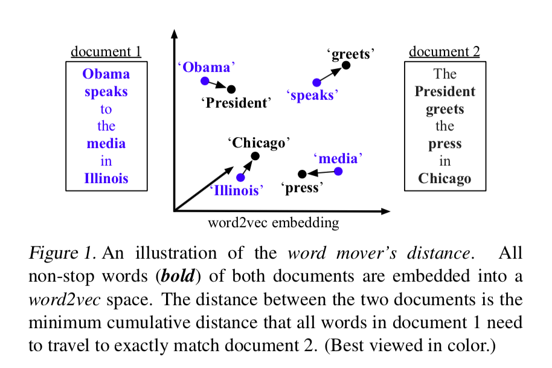

论文:From Word Embeddings To Document Distances
WMD为衡量文本相似度的方法。使用WMD来计算两个文本D1,D2之间的相似度，计算流程如下：
- 首先对两个文本去除停用词
- 使用归一化BOW(词袋模型)方法来分别表示D1,D2
- 使用word2vec embedding来表示D1,D2中的每个词
- 在D1中所有词travel到D2中所有词，对于每一个D1中的词，它与D2中的词语义比较相近的，那么可以全部移动或移动距离多一些(权重值)；对于语义差异较大，则移动距离少一点或者不移动。用词向量距离乘以移动距离就是两个词的转移代价。
- 求全局的转移代价累加和最小值(D1中所有词全部转移到D2,D2中的所有词也全部转移到D1中)。
- 这个全局转移代价累加和的最小值就是D1,D2的相似度。
如下图所示，4个词对之间的词向量欧式距离的累加值就是document1和document2的相似度：

算法的数学描述
假设有一个预训练好的word2vec词向量矩阵，表示词典大小为n，词向量维度为d。
如果词i在文本中出现的次数为 ，那么我们定义词i的归一化词频为:
另外词语距离的定义：词i与词j的欧式距离为：
令和表示分别表示要D1,D2两个文本的归一化词袋表示，中的每个词i都可以全部或者部分转移到的每个词。因此，定义一个稀疏的转移矩阵， 表示d中的词i到中的词j的转移距离。。
那么，从d到的全局转移代价累加和表示为：。
这里需要求出最小的全局转移代价累加和，所以把求最小化问题建模成线性规划问题：
s.t.
WMD的计算过程可视化如下图所示：
以上问题的线性规划问题是EMD算法中的一种特殊情况，具体求解过程可参考EMD算法。
本论文采用了Fast-EMD论文中提出的求解方法：Fast and Robust Earth Mover’s Distances
时间复杂度为，其中p为两个文本移除停用词和去重后词表的大小。
算法改进
如果字典非常大，那么上述的求解方法的计算复杂度太高，我们可以通过使用low bound来减少问题的求解空间。从而提升计算效率。
WCD low bound(词心距离)
根据三角不等式可得 ：
WCD对应的式子为:，，因此对应的时间复杂度为O(dp)，d为词向量的维度。
RWMD low bound(松弛WMD距离)
尽管WCD的时间复杂度很低，但是边界过于宽松，无法很好的近似WMD。因此，这里使用更加tight的下界RWMD。RWMD需要计算两次，基于WMD目标函数，分别去掉两个约束条件中的一个，然后求解最小值，使用两个最小值中的最大值作为WMD的近似值。
比如，去掉约束条件(3-3)，可得:
s.t.
这个问题的最优解是，对于文本D1中的一个词，找到另一文本D2中与之最相近的一个词，全部转移到这个词。即：
使用和分别表示，去掉不同约束条件所计算得到的最小值，RWMD最终的最小值为:
这个的时间复杂度为。
剪枝
接下来讨论如何使用上面的两种下界对WMD进行剪枝。
- 利用WCD计算出所有的距离，取topK
- 计算topK文本的WMD值
- 对于剩下的文本，计算RWMD值，如果RWMD比topK中的WMD最大的小，则替换topK中的WMD最大的文本，并计算它的WMD值，否则，剪枝。
由于RWMD值与WMD值非常接近，因此对于剩下文本，几乎95%都是可以被剪枝的。
在twitter/amazon这两个数据集上，随机抽取一些文本组成句对，将这些句对按WMD值进行升序排列，横坐标为句对编号，纵坐标为WCD,RWMD,WMD的值。从图中可以看出，WCD是非常宽松的下界，而RWMD则与WMD非常接近：

优缺点及改进
优点
- 不需要设置超参数
- 无监督，不依赖标注数据，没有冷启动问题
- 有全局最优解
- 可人为干预词的重要性
缺点
- 词袋模型，没有保留语序信息(ngram)
- 不能处理OOV问题(因为word2vec导致的，这里可以使用fasttext)
- 处理否定词能力差(加入情感极性信息)
- 处理领域同义词互斥词的能力偏差(一词多义,elmo?)